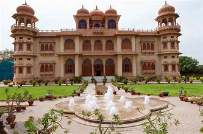
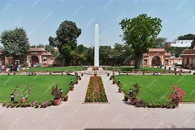

Mohatta Palace
A symbol of Karachi’s cultural heritage, built in 1927 during the British colonial era.
A symbol of Karachi’s cultural heritage, built in 1927 during the British colonial era.
Mohatta Palace is a stunning heritage building located in Karachi, Sindh, Pakistan. It was built in 1927 by Shivratan Chandraratan Mohatta, a wealthy Hindu businessman, as his summer residence. After the partition of India in 1947, the palace was taken over by the government of Pakistan and has since served various purposes.
Today, Mohatta Palace is a museum that showcases the cultural, historical, and artistic heritage of Pakistan. It is one of the most visited tourist attractions in Karachi and a fine example of colonial-era architecture blended with local design traditions.
Mohatta Palace is an architectural gem designed in the Indo-Saracenic style, combining elements of Mughal, Rajasthani, and European architecture. It was constructed with pink Jodhpur stone and local yellow Gizri stone, giving it a distinctive appearance.
The palace consists of spacious rooms, intricate stone carvings, domes, balconies, and beautifully designed windows. The gardens surrounding the palace add to its grandeur. Its unique design reflects the luxurious lifestyle of Karachi’s elite during the colonial era.
